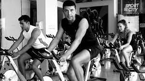
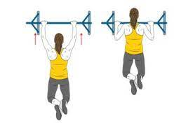
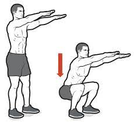
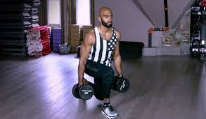

Rutinas de gimnasio
A continuación, te presentamos algunas rutinas de gimnasio que puedes probar:
- Rutina para pecho y espalda:
- 1. Calentamiento: 5-10 minutos en la bicicleta estática o la cinta de correr para aumentar la temperatura corporal y preparar los músculos para el ejercicio. 
- 2. Press de banca con barra: 3 series de 10-12 repeticiones. Este ejercicio trabaja principalmente el pecho, pero también involucra los tríceps y los hombros. Es importante mantener una buena técnica y no arquear la espalda en el levantamiento de la barra.
- 3. Remo con barra: 3 series de 10-12 repeticiones. Este ejercicio trabaja principalmente la espalda, incluyendo los músculos de la parte superior e inferior. Es importante mantener la espalda recta y los hombros hacia abajo para evitar lesiones.
- 4. Aperturas con mancuernas: 3 series de 12-15 repeticiones. Este ejercicio se enfoca en el pecho, especialmente en la parte superior. Es importante bajar los brazos lentamente para maximizar la tensión en los músculos.
- 5. Dominadas: 3 series de 8-10 repeticiones. Este es uno de los mejores ejercicios para la espalda y los hombros. Si no puedes hacer dominadas completas, puedes usar una máquina de asistencia o hacer dominadas con agarre invertido (palmas hacia ti). 
- 6. Jalones en polea: 3 series de 12-15 repeticiones. Este ejercicio trabaja principalmente la parte superior de la espalda y los hombros. Es importante llevar los codos hacia atrás y abajo para apuntar a los músculos correctos.
- 7. Flexiones de pecho: 3 series de 10-15 repeticiones. Este ejercicio se enfoca en el pecho, pero también involucra los tríceps y los hombros. Es importante mantener una buena forma y bajar el cuerpo hasta que los brazos estén paralelos al suelo.
- 8. Enfriamiento: 5-10 minutos de cardio ligero para disminuir la temperatura corporal y reducir la tensión en los músculos.
- Recuerda que es importante mantener una buena técnica en todos los ejercicios y hacerlos con un peso que sea desafiante pero seguro para tu nivel de condición física. También es bueno variar la rutina de vez en cuando para evitar el aburrimiento y el estancamiento en los resultados.
- Rutina de brazo ( bicep y tricep):
- puedes agarrar una liga y hacer distintos movimientos controlados para calentar los brazos
- 1. Curl de bíceps con mancuernas: 3 series de 10-12 repeticiones
- 2. Flexiones de tríceps con mancuernas: 3 series de 10-12 repeticiones
- 3. Curl de bíceps en barra: 3 series de 10-12 repeticiones
- 4. Extensión de tríceps en polea alta: 3 series de 10-12 repeticiones
- 5. Curl de martillo con mancuernas: 3 series de 10-12 repeticiones
- 6. Extensión de tríceps en banco: 3 series de 10-12 repeticiones
- 1. Calentamiento: Empieza en la cinta de correr o la bicicleta estática durante 5-10 minutos para calentar tus músculos.
- 2. Sentadillas: 3 series de 12 repeticiones. Mantén la espalda recta y los pies al ancho de los hombros mientras desciendes lentamente en una sentadilla, asegurándote de que tus rodillas no se extiendan más allá de tus dedos. 
- 3. Máquina de prensa: 3 series de 12 repeticiones. Ajusta el peso de la máquina y siéntate con la espalda recta. Luego, presiona tus piernas hacia afuera para trabajar tus cuádriceps.
- 4. Estocadas: 3 series de 10 repeticiones. Empieza con un pie adelante y baja lentamente en una estocada con tu otra pierna detrás de ti. Luego, alterna las piernas para trabajar ambos lados del cuádriceps. 
- 5. Elevaciones de pantorrilla: 3 series de 12 repeticiones. Usa una máquina de elevación de pantorrilla o agarra mancuernas en cada mano. Luego, levanta tus talones para trabajar tus pantorrillas.
- 6. Finalización: Termina con 5-10 minutos de estiramientos estáticos para flexibilizar tus músculos.


Aquí te muestro una rutina de gimnasio efectiva para trabajar los bíceps y tríceps:


Es importante recordar que además de hacer ejercicios específicos para los bíceps y tríceps, también es necesario trabajar otros músculos del cuerpo para tener una rutina de entrenamiento completa y equilibrada. Recuerda siempre hacer un calentamiento previo y estirar al finalizar la rutina para prevenir lesiones y mejorar la recuperación muscular.
Rutina para pierna enfoque en cuadriceps y pantorrilla:


Rutina para pierna enfoque en femoral y gluteos:
- 1. Sentadillas con peso: 3 series de 12 repeticiones
- 2. Prensa de piernas (con los pies juntos): 3 series de 10 repeticiones
- 3. Extensiones de cadera: 3 series de 15 repeticiones
- 4. Zancadas con peso: 3 series de 10 repeticiones por pierna
- 5. Curl de piernas acostada: 3 series de 12 repeticiones
- 6. Elevaciones de glúteos en banco: 3 series de 12 repeticiones


Recuerda calentar antes de comenzar la rutina y estirar al final para prevenir lesiones. Además, es importante que siempre trabajes con peso adecuado para ti y te tomes descansos suficientes entre series.